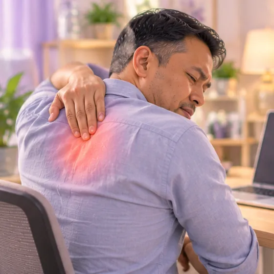
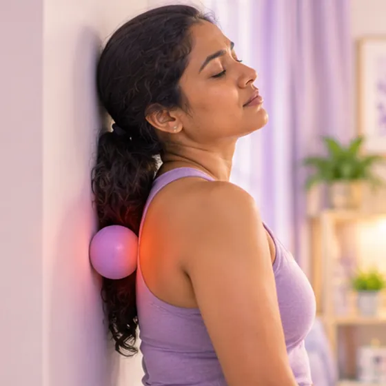
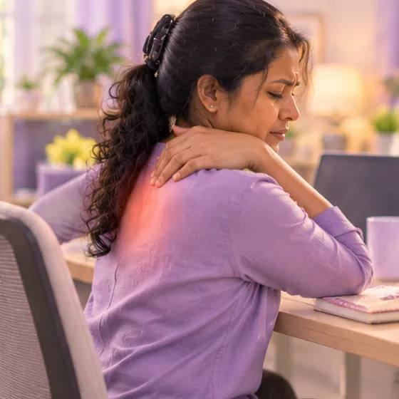
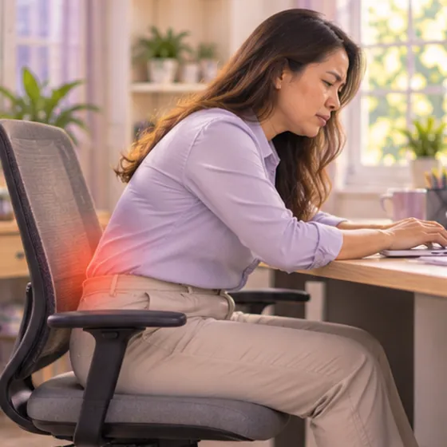
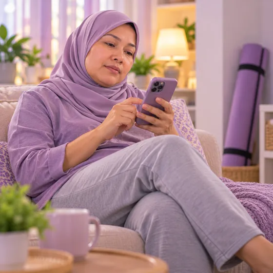
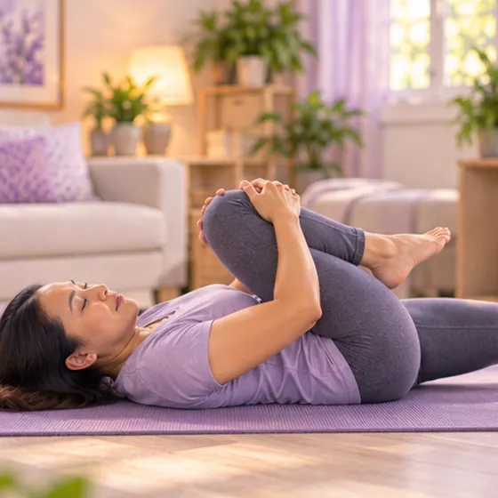

Miofasitis belakang atas
Sengal, tegang atau rasa terbakar di antara tulang belikat akibat otot belakang dan tisu di sekelilingnya yang dirangsang
Apa itu
Sengal, tegang atau rasa terbakar pada otot dan tisu di sekitar tulang belikat dan tulang belakang atas, biasanya akibat duduk lama, penggunaan berlebihan atau ketegangan.
- Belakang atas
- Biasa dengan kerja di meja
- Sengal, rasa diikat
- Jumpa doktor
- Doktor keluarga, ahli fisioterapi, doktor ortopedik atau doktor pemulihan
- Biasa pada
- Pekerja pejabat dan orang yang duduk berjam-jam
- Berjangkit
- Tidak
- Perjalanan
- Hilang timbul, selalunya bertambah baik dalam beberapa minggu dengan postur yang lebih baik dan pergerakan tetap
Butiran perubatan
Apa yang berlaku di belakang atas
Belakang atas dan tengah mempunyai beberapa lapisan otot: otot yang menghubungkan tulang belakang dengan tulang belikat (rhomboid serta trapezius tengah dan bawah), otot yang berjalan di sepanjang kedua-dua sisi tulang belakang, dan lapisan nipis tisu penghubung (fascia) yang membungkusnya. Apabila otot ini terbeban lama, contohnya duduk dengan kepala ke depan dan bahu membulat, ia kekal separa tegang. Jalur tegang dan simpulan yang sakit (titik pencetus miofasial) boleh terbentuk. Ia boleh terasa dalam, membakar atau seperti jalur yang mengikat belakang, dan boleh menghantar sengal ke bahu, leher atau sisi dinding dada. Nama miofasiitis menyarankan keradangan, tetapi ia bukan jangkitan: pada kebanyakan orang, masalah utamanya ialah otot dan fascia yang terbeban dan dirangsang. Tulang dan saraf biasanya bukan masalah utama.
Corak biasa
- Postur dan penggunaan berlebihan: berjam-jam di meja atau skrin, kepala ke depan, bahu membulat; sengal bertambah sepanjang hari
- Berkaitan sejuk dan tekanan: angin sejuk atau penyaman udara pada belakang, dan tekanan yang menjadikan bahu terus tegang, boleh mencetuskannya
- Selepas ketegangan: mengangkat, memulas, bersukan atau jatuh secara tiba-tiba boleh meninggalkan otot sakit dan tegang selama beberapa minggu
Prognosis
Kebanyakan orang bertambah baik dalam beberapa minggu dengan postur yang lebih baik, pergerakan tetap, regangan lembut dan penguatan otot belakang. Ia boleh berulang jika tabiat yang mencetuskannya kekal sama. Jika sakit tidak reda, doktor atau ahli fisioterapi boleh mencari punca lain. Keputusan rawatan dibuat oleh doktor anda.
Tanda biasa
Jalur tegang di belakang atasKetegangan miofasial 
Sengal membakar di antara tulang belikatSakit miofasial seperti terbakar 
Simpulan sakit pada ototTitik pencetus miofasial Sakit semasa tarik nafas dalam atau memusingSakit toraks berkaitan pergerakan Sukar menghulur ke depan atau ke atasMobiliti toraks dan skapula terhad 
Lebih teruk pada penghujung hari bekerjaSakit miofasial berkaitan keletihan
Butiran perubatan
Gejala dengan lebih terperinci
- Sengal dalam atau rasa diikat: sengal tumpul yang dalam atau rasa seperti jalur mengikat di belakang atas, kebanyakannya di antara tulang belikat dan di sebelah tulang belakang
- Sengal membakar: sesetengah orang rasa sengal membakar di antara tulang belikat
- Simpulan yang sakit: tompok kecil yang tegang dan sakit pada otot, terasa sakit apabila disentuh dan boleh menghantar sakit ke bahu, leher, lengan atas atau sisi dinding dada
- Lebih teruk semasa bergerak: memusing, menghulur ke depan atau ke atas, dan kadang-kadang tarik nafas dalam menjadikannya lebih teruk kerana otot di sekitar tulang rusuk dan tulang belikat bekerja
- Corak masa: lebih teruk pada penghujung hari bekerja, selepas duduk lama dan dalam cuaca sejuk; selalunya lega dengan kehangatan dan pergerakan lembut
- Tidak biasa: sakit atau rasa tertekan di dada, sesak nafas, demam, atau kebas atau kelemahan pada lengan atau kaki perlu diperiksa oleh doktor
Mengapa ia berlaku

Duduk berjam-jamDuduk lama Membongkok dengan komputer ribaPostur yang buruk 
Angin sejuk pada leher atau belakangPendedahan sejuk dan spasme otot Beg berat di sebelah bahuBeban tidak seimbang 
Kurang bersenamOtot sokongan lemah 
Hari yang memenatkanKeletihan otot
Butiran perubatan
Punca dan faktor risiko
- Duduk lama dan postur yang buruk: berjam-jam di meja dengan kepala ke depan dan bahu membulat menyebabkan otot belakang atas terus bekerja tanpa rehat
- Kerja berulang dan membawa barang: menaip, memandu, kerja dengan lengan di atas kepala, dan membawa beg berat di sebelah bahu menegangkan satu sisi belakang atas
- Udara sejuk: penyaman udara atau angin yang meniup belakang, atau tidur dengan belakang terdedah, boleh menyebabkan otot menegang
- Ketegangan atau kecederaan tiba-tiba: mengangkat berat, memulas, kecederaan sukan atau jatuh
- Kurang bersenam: otot belakang dan tulang belikat yang lemah cepat letih
- Tekanan dan tidur yang kurang: ia menyebabkan bahu terus tegang dan melambatkan pemulihan
Jumpa doktor dahulu jika
- Sakit dengan dada sesak, rasa tertekan, berpeluh atau sesak nafas: hubungi 999
- Sakit dengan demam, batuk baru atau sesak nafas
- Sakit membakar diikuti ruam lepuh di sebelah badan
- Sakit selepas jatuh atau kemalangan
- Kebas atau kelemahan baru pada kaki, atau masalah dengan pundi kencing atau usus
- Sakit teruk yang mengejutkan anda pada waktu malam, berat badan turun tanpa sebab, atau sakit yang tidak reda selepas beberapa minggu
Jika mana-mana berkenaan, sila jumpa doktor sebelum sesi.
Teruskan mengambil ubat biasa anda dan terus berjumpa doktor. Sesi kami ialah sokongan lembut dan tidak menggantikan rawatan perubatan.
Butiran perubatan
Bagaimana doktor memeriksa
Simpulan yang sakit (titik pencetus) dikesan melalui sentuhan, jadi diagnosis kebanyakannya dibuat daripada cerita anda dan pemeriksaan.
- Sejarah dan pemeriksaan: bila sakit bermula, apa yang menjadikannya lebih baik atau teruk, kerja dan tabiat anda, dan sebarang gejala dada, pernafasan, perut atau demam; kemudian postur anda, pergerakan tulang belakang, bahu dan tulang belikat, otot yang sakit dan jalur tegang, serta pemeriksaan saraf, jantung dan paru-paru jika perlu
- Ujian: kebanyakan orang dengan sakit otot yang tipikal tidak memerlukannya; X-ray, ujian darah, ECG, X-ray dada atau MRI digunakan apabila ada tanda amaran atau gejala tidak sesuai dengan masalah otot
Masalah yang terasa serupa
Masalah jantung (seperti angina atau serangan jantung), masalah paru-paru (seperti radang paru-paru, keradangan selaput paru-paru atau darah beku di paru-paru), masalah pundi hempedu (sakit boleh dirasa di antara tulang belikat), kayap sebelum ruam keluar, dan masalah tulang rusuk atau tulang belakang toraks boleh terasa seperti sakit otot belakang atas, jadi doktor memeriksa untuk membezakannya.
Sakit bersama dada sesak, berpeluh atau sesak nafas boleh menjadi masalah jantung: hubungi perkhidmatan kecemasan (999).
Menjaga diri

Berehat, regangan lembutRehat mikro dan mobiliti 
Regangan belakang yang lembutSenaman mobiliti lumbar 
Kehangatan lembutHaba permukaan 
Berjalan, kekal aktifSenaman aerobik berimpak rendah Kuatkan otot terasSenaman penstabilan teras Skrin setinggi mataErgonomik stesen kerja
Butiran perubatan
Penjagaan harian dengan lebih terperinci
- Stesen kerja: bahagian atas skrin setinggi mata, kira-kira sejauh lengan; papan kekunci dekat; siku kira-kira 90 darjah; kerusi yang menyokong belakang; bahu santai, tidak terangkat
- Rehat untuk bergerak: berdiri dan bergerak setiap 30 hingga 45 minit; putar bahu ke belakang dan rapatkan tulang belikat dengan lembut
- Regangan lembut: membuka dada di pintu dan melengkungkan belakang atas dengan lembut di atas penyandar kerusi, hanya dalam julat yang selesa; ahli fisioterapi boleh menunjukkan yang sesuai dengan anda
- Kekuatan dan senaman: berjalan atau berenang secara tetap, dan penguatan otot tulang belikat, belakang atas dan teras
- Kehangatan dan relaksasi: bungkusan hangat atau mandi air suam boleh melegakan otot tegang; elakkan penyaman udara dan kipas meniup belakang anda; pernafasan perlahan dan jeda singkat membantu bahu berehat
- Melegakan simpulan yang sakit: urutan sendiri yang perlahan dan lembut dengan bola lembut pada dinding boleh terasa melegakan untuk seketika; berhenti jika lebih sakit, dan minta ahli fisioterapi menunjukkannya
- Pelega sakit: tanya doktor atau ahli farmasi apa yang selamat untuk anda; jangan mula ubat baru sendiri
Beritahu ahli terapi anda
- Lengan kebas atau kesemutan
- Kecederaan atau pembedahan belakang baru-baru ini
- Tulang lemah
- Perentak jantung atau implan logam
- Kehamilan
Ahli terapi anda akan menyemaknya bersama anda sebelum bermula.
Soalan dan jawapan
Apakah Miofasitis belakang atas?
Sengal, tegang atau rasa terbakar di antara tulang belikat akibat otot belakang dan tisu di sekelilingnya yang dirangsang. Sengal, tegang atau rasa terbakar pada otot dan tisu di sekitar tulang belikat dan tulang belakang atas, biasanya akibat duduk lama, penggunaan berlebihan atau ketegangan.
Apakah tanda biasa Miofasitis belakang atas?
Jalur tegang di belakang atas · Sengal membakar di antara tulang belikat · Simpulan sakit pada otot · Sakit semasa tarik nafas dalam atau memusing · Sukar menghulur ke depan atau ke atas · Lebih teruk pada penghujung hari bekerja
Mengapa Miofasitis belakang atas berlaku?
Duduk berjam-jam · Membongkok dengan komputer riba · Angin sejuk pada leher atau belakang · Beg berat di sebelah bahu · Kurang bersenam · Hari yang memenatkan
Bagaimana menjaga diri dengan Miofasitis belakang atas?
Berehat, regangan lembut · Regangan belakang yang lembut · Kehangatan lembut · Berjalan, kekal aktif · Kuatkan otot teras · Skrin setinggi mata
Bolehkah sesi AI Body Master membantu Miofasitis belakang atas?
Sesi ialah sokongan meridian tanpa jarum yang lembut untuk kesejahteraan anda. Ia tidak merawat atau menyembuhkan Miofasitis belakang atas dan tidak menggantikan ubat atau doktor anda. Beritahu ahli terapi anda sebelum sesi bermula.
Keadaan berkaitan
Rujukan: Mayo Clinic: Myofascial pain syndrome; Cleveland Clinic: Myofascial pain syndrome; NCBI StatPearls: Myofascial Pain Syndrome; NHS: Back pain
Halaman dikemas kini: 2026-11-04